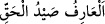

çarptırması kastedilir. “Allah azizdir.” Yani daima galiptir, hiç mağlup olmaz, “intikam
alandır.” Yani kendisine karşı isyan ve düşmanlıkta ısrar edenlere karşı son derece
şiddetlidir.
Allah Teâlâ halili (dostu) Hz. İbrâhim (a.s.)’a şöyle hitab etmiştir: “Ey İbrâhim,
Ben’den yırtıcı hayvanlardan korktuğun gibi kork!” Yani yırtıcı hayvanların,
parçalayacağı avın faydalı mı zararlı mı olduğuna bakmayışı gibi Allah Teâlâ bir
kimseye kazâsını ve hükmünü uygulamak isterse onun nebî mi, velî mi, yoksa düşman
mı, olduğuna bakmaz. Allah Teâlâ, helak etmek istediğini öyle bir yakalar ve çarpar ki,
O’nun gazap ve intikamından günahkarlar nasıl kurtulabilsinler?
Öyleyse akıllı olan, Allah’a itiraz ve isyan etmekten nerede ve ne zaman olursa olsun
elinden geldiği ve mümkün olduğu kadar sakınsın. Çünkü insan ektiğinden başka bir şey
biçemez.
Mesnevî’de der ki:
Sen inanmazsan da bunu herkes bilir
Ne ekersen, bir gün gelir onu biçersin
Zayıf bir mahluk olan insanoğlu, kuvvet ve kudret sahibi Allah Teâlâ’ya nasıl olur da
isyan eder? Şaşılacak şey budur. Bunun sebebi, dünyânın geçici zevk ve lezzetlerine
dalıp Allah Teâlâ’dan gafil olmaktan başka bir şey değildir.
“Ey îman edenler, ihramda iken av öldürmeyin” âyetinde şöyle bir nükte vardır:
Allah Teâlâ, ihramda olmayan kişilere avı mübah kılmıştır. Onlar avamdan gaflet ehli
olanlardır. Aşağılık emelleri sebebiyle dînî kemâlâtı bırakıp sadece bedenî ibadetlerle
yetinenlerdir.
Allah Teâlâ ihramda olan kişilere avı yasak kılmıştır. Onlar, muhabbet ehli
kimselerdir. Vuslat Kâbe’sini ziyâret etmek için dünyâdan ihrâma girmişlerdir. Yani
Allah Teâlâ: “Bize yönelip rızamızı arzu eden kişinin bütün arzu ve isteklerinden
vazgeçmesi, vuslattan başka hiç bir hâli arzu etmemesi gerekir.” buyurmaktadır.
Tasavvuf kitaplarında şöyle geçmektedir: __WORD__ “Ârif, Hakk’ın avıdır”
denilmiştir. Kendisi av olanın avlanması olmayacağı için böylelerine avlanmak caiz
değildir.
“Sizden kim o avı kasden öldürürse” Yani tâliplerden kim, zararını ve mahiyetini
bildiği halde nefis ve hevasına mağlup olarak, gözünü hırs ve tamah bürümüş bir
şekilde bir dünyâlığa meylederse, demektir.
“Öldürdüğünün dengi bir hayvan cezâsı vardır” Yani elemi, o lezzet ve şehvete denk
bir riyâzat ve mücâhede ile nefsini cezâlandırır “İçinizden âdil iki kişinin hüküm
vereceği” ibâresindeki âdil iki kişi akıl ve ruhtur. Bu ikisi, îmanın miktarı ve riyâzatın
türleri hakkında hüküm verirler. Riyâzatın türleri yeme içmeyi azaltmak, malı mülkü